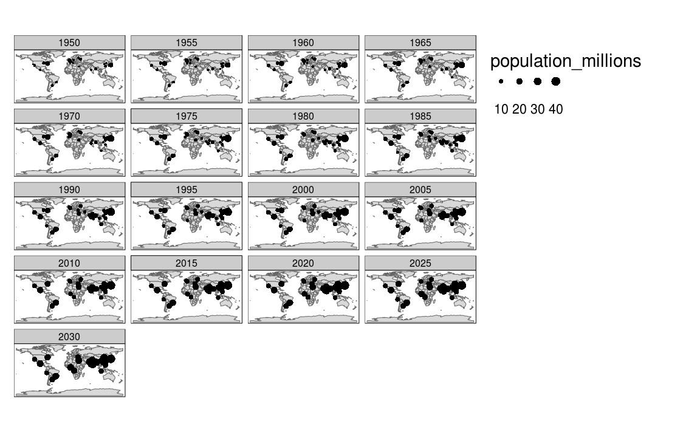

6 Advanced map making
Prerequisites
6.1 Facetted maps
Facetted maps are a common and potentially effect way of highlighting spatial relationships that are more complex that a single relationship. The population of cities at one moment in time can be represented easily on a single map, for example by making the size of symbols variable for each city depending on population. However, to represent the populations of cities at multiple moments in time requires an extra dimension. This could be added by an additional aesthetic such as colour but this risks cluttering the map because it will involve multiple overlapping points (cities do not tend to move over time!).
library(tmap)
qtm(world) +
tm_shape(urban_agglomerations) +
tm_dots(size = "population_millions") +
tm_facets(by = "year")
6.2 Animations
Animated maps can be useful for communicating how spatial phenomena shift over time. An advantage of facetted plots are that they can be printed, but the approach has disadvantages: faceted maps can become very small with more than ~9 maps in one figure, and it can be hard to see the spatial relationships between each facet when each map is on a different part of the page! Furthermore, with the increasing proportion of communication that happens via digital screens, the disadvantage that animations cannot be printed is diminished. You can always link readers to a web-page containing an animated (or interactive) version of a printed map to help make it come alive.
Figure 6.1 is a simple example of the benefits of an animated map. Unlike the facetted plot presented in the previous section, it does not squeeze all 17 for them all to be displayed simultaneously.
knitr::include_graphics("figures/urban-animated.gif")
Figure 6.1: Animated map showing the top 30 largest ‘urban agglomerations’ from 1950 to 2030 based on population projects by the United Nations
m = tm_shape(world) +
tm_polygons() +
tm_shape(urban_agglomerations) +
tm_dots(size = "population_millions") +
tm_facets(by = "year", nrow = 1, ncol = 1) options(scipen = 999)
wb_data_create = function(indicator, our_name, year, ...){
df = wb(indicator = indicator, startdate = year, enddate = year, ...) %>%
as_data_frame() %>%
select(iso_a2=iso2c, value) %>%
mutate(indicator = our_name) %>%
spread(indicator, value)
return(df)
}
data_lifeExp = seq(1963, 2013, by=5) %>%
set_names(.) %>%
map_df(~wb_data_create(.x, indicator = "SP.DYN.LE00.IN",
our_name = "lifeExp",
country = "countries_only"), .id='year') %>%
spread(year, lifeExp)
world_sf_temporal = ne_countries(returnclass = 'sf') %>%
left_join(., data_lifeExp, by = c('iso_a2')) %>%
mutate(area_km2 = set_units(st_area(.), km^2)) %>%
select(iso_a2, name_long, continent, region_un, subregion, type, area_km2, `1963`:`2013`) %>%
gather(year, lifeExp, `1963`:`2013`)m1 = tm_shape(world_sf_temporal) +
tm_polygons("lifeExp") +
tm_facets(by = "year", nrow = 1, ncol = 1, drop.units = TRUE)
animation_tmap(m1, filename = "figures/11-lifeExp_animation.gif", width = 2000, height = 600, delay = 40)world_sf_temporal2 = filter(world_sf_temporal, continent == "South America")
m2 = tm_shape(world_sf_temporal2) +
tm_polygons("lifeExp", n = 12) +
tm_facets(by = "name_long", along = "year", drop.units = TRUE, free.coords = TRUE)
animation_tmap(m2, filename = "figures/11-lifeExp_sa_animation.gif", width = 1600, height = 1000, delay = 40)